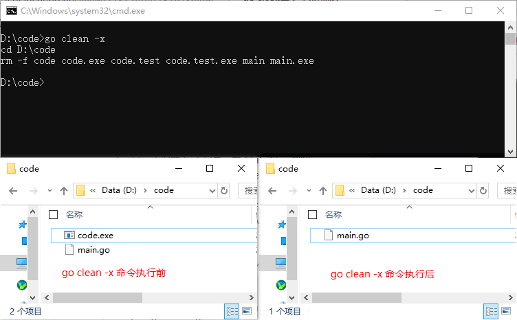

go clean命令——清除编译文件
Go语言中
实际开发中
下面我们以本地的一个项目为例，演示一下
go clean命令可以移除当前源码包和关联源码包里面编译生成的文件，这些文件包括以下几种：
-
执行
go build命令时在当前目录下生成的与包名或者 Go 源码文件同名的可执行文件。在 Windows 下，则是与包名或者 Go 源码文件同名且带有“.exe”后缀的文件。 -
执行
go test命令并加入-c标记时在当前目录下生成的以包名加“.test”后缀为名的文件。在 Windows 下，则是以包名加“.test.exe”后缀的文件。 -
执行
go install命令安装当前代码包时产生的结果文件。如果当前代码包中只包含库源码文件，则结果文件指的就是在工作区 pkg 目录下相应的归档文件。如果当前代码包中只包含一个命令源码文件，则结果文件指的就是在工作区 bin 目录下的可执行文件。 -
在编译 Go 或 C 源码文件时遗留在相应目录中的文件或目录 。包括：“_obj”和“_test”目录，名称为“_testmain.go”、“test.out”、“build.out”或“a.out”的文件，名称以“.5”、“.6”、“.8”、“.a”、“.o”或“.so”为后缀的文件。这些目录和文件是在执行
go build命令时生成在临时目录中的。
go clean命令就像 Java 中的maven clean命令一样，会清除掉编译过程中产生的一些文件。在 Java 中通常是 .class 文件，而在Go语言中通常是上面我们所列举的那些文件。
go clean -i -n
通过上面的示例可以看出，go clean命令还可以指定一些参数。对应的参数的含义如下所示：-
-i 清除关联的安装的包和可运行文件，也就是通过
go install安装的文件； - -n 把需要执行的清除命令打印出来，但是不执行，这样就可以很容易的知道底层是如何运行的；
- -r 循环的清除在 import 中引入的包；
- -x 打印出来执行的详细命令，其实就是 -n 打印的执行版本；
-
-cache 删除所有
go build命令的缓存 - -testcache 删除当前包所有的测试结果
实际开发中
go clean命令使用的可能不是很多，一般都是利用go clean命令清除编译文件，然后再将源码递交到 github 上，方便对于源码的管理。下面我们以本地的一个项目为例，演示一下
go clean命令：
go clean -n
cd D:\code
rm -f code code.exe code.test code.test.exe main main.exe
-n标记可以将命令的执行过程打印出来，但不会正真执行。如果既要打印命令的执行过程同时又执行命令的话可以使用-x标记，如下所示：
go clean -x
cd D:\code
rm -f code code.exe code.test code.test.exe main main.exe

图：go clean 命令运行前后对比
图：go clean 命令运行前后对比
关注公众号「站长严长生」，在手机上阅读所有教程，随时随地都能学习。内含一款搜索神器，免费下载全网书籍和视频。

微信扫码关注公众号